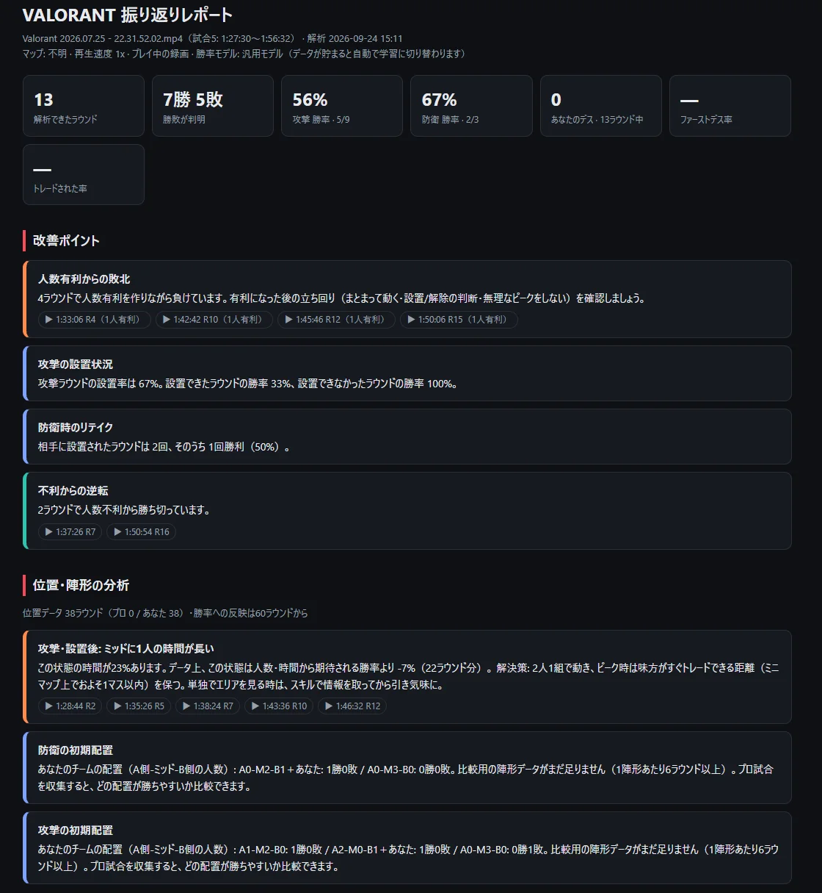
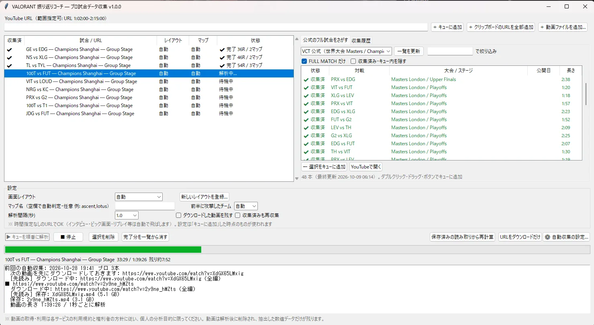
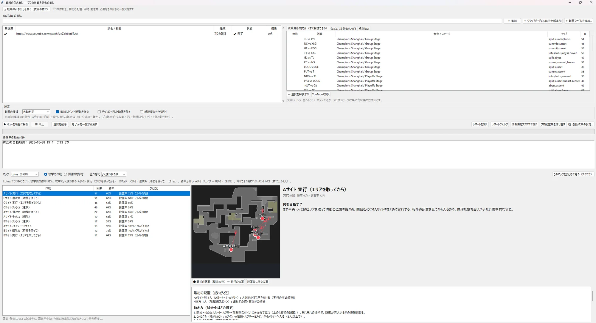
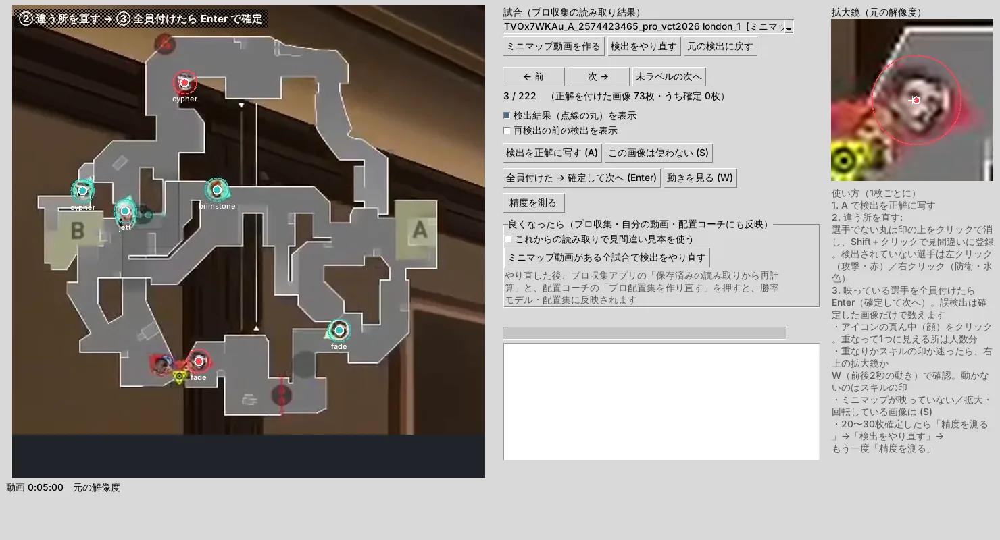
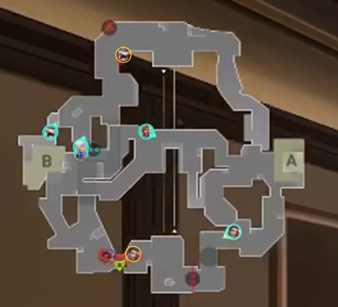
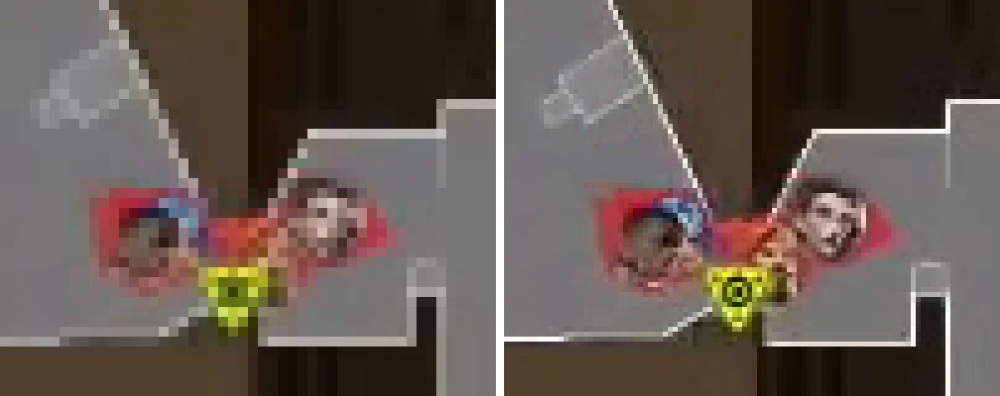

個人開発 / Windows 向けデスクトップアプリ / 2026年6月〜
対戦ゲーム VALORANT の試合映像を入れると、ラウンドごとの勝率の動きを推定し、どの場面で何が原因で不利になったかを言葉で返すソフトです。プロの大会の配信映像も同じ方法で読み取り、学習データと「真似できる作戦の一覧」を作ります。
レポートに出る文勝率25%（攻撃の開始時点は51%）。下げた要因: 味方が1人少ない（3対4）（−20%）、体力: 味方は1人平均53% / 相手は90%（−7%）。
e スポーツにはまっていて、ゲームをただプレイするだけでなく、知識を活かして上手くなる方法はないかと考えていました。そこで思いついたのが、データを使った解析で自分の行動を振り返り、改善していくことです。
VALORANT は 5 対 5 で攻撃と防衛に分かれ、先に 13 ラウンドを取ったチームが勝つゲームです。戦績サイトではキル数や勝敗は分かりますが、ラウンドの中の「どの瞬間に、なぜ不利になったか」は、自分でリプレイを見返して考えるしかありません。そのため最初から、試合の映像そのものから人数や時間を読み取り、場面ごとの勝率を出すことを目指しました。
リプレイ、プレイ中の録画、大会の配信のどれでも、解像度や画面の形が違っても、マップ・攻守・試合の区切りを自動で判定します。何本でもキューに積んでおけば、順番に解析します。
「勝率 25%」だけでは改善につながりません。人数・装備・体力・前のラウンドの流れなど、要因ごとに何%動いたかに分けて、文章で示します。
新しい情報を足すたびに、学習に使っていない試合で精度を比べ、良くなったときだけ使います。体力の情報は一度「効果なし」と判定され、データが増えてから自動で採用されました。
映像を一定の間隔で画像として読み、画面の決まった場所から数字や体力バーを読み取ります。読み取った値をラウンドごとの時系列にまとめ、勝率のモデルに通します。プロの配信から集めたデータは同じフォルダに貯まり、自分の試合の解析にもそのまま使われます。
勝率モデルの検証に使ったプロの試合。VCT の公式フル試合 30 本・80 マップ分を、自分の PC で集めました。
プロの配置から作った作戦の数（攻撃 53・防衛 31、10 マップ）。6 ラウンド以上使われたものだけを残しています。
画像1枚を読み取る時間。2 時間の配信も、ダウンロードから解析・動画の削除まで自動で進みます。
アドバイスの文章は AI が書いているのではなく、計算した数字と条件に合わせて、あらかじめ用意した文に当てはめています。同じ動画なら必ず同じ結果になり、データが外に出ることもありません。
精度は、試合ごとにデータを分け、学習に使っていない試合で当たるかで測っています（5 分割の交差検証）。同じ試合の別のラウンドが学習側に混ざると、良く見えすぎるためです。log-loss は確率の外れ方の大きさで、低いほど良い値です。
| 日付 | 入れたもの | log-loss | 的中率 |
|---|---|---|---|
| — | 汎用の式（人数・時間・設置だけ） | 0.541 | 69.0% |
| 09/27 | 前のラウンドの勝敗・連敗数（お金の代わり）、生存人数の揺れの補正 | — | — |
| 09/29 | チームの合計体力 | 0.486 | 74.5% |
| 10/01 | 装備（武器とシールド）を全試合に | 0.467 | 75.3% |
09/27 の改良は当時のデータ（プロ 7 マップ）で log-loss 0.506 → 0.472 になりましたが、データの量が違うため表には並べていません。参考として、CS:GO でサーバーの完全なデータ（装備・体力・位置つき）を使った研究の値は log-loss 0.535 です。
場面ごとに分けると、人数に差がついたあとはよく当たり、撃ち合いが始まる前はまだ当てにくいことが分かりました。残りの伸びしろは 5 対 5 の場面にあり、位置の情報を足す理由になっています。
課題一般的な文字認識（Tesseract）では、明るい背景と独特な字体の画面の数字を安定して読めませんでした。
対応配信ごとに数字の形を映像から覚え、その形と照合して読む方式を自作しました。速さと正確さの両方が上がりました。
課題配信の赤と水色をチームの色だと思っていましたが、実際は攻撃・防衛の色で、前半と後半で入れ替わっていました。
対応選手カードの体力バーの色で攻守を判定し直しました。古い方式のデータには版の番号をつけ、自動で見つけて集め直せるようにしました。
課題ダウンロードが途中で失敗したあと、別の画質の続きを同じファイルにつないでしまい、壊れた動画ができていました。
対応やり直すときは最初から取り直し、取得した直後に8か所を試し読みして確かめます。途中までしか読めなかった結果は保存しません。
課題今年の配信は残り 15 秒で時計が赤くなり、スパイク設置の表示と同じに見えていました。検出した設置の約4分の1がこれでした。
対応直前の時計が 15 秒前後なら設置とみなさないようにしました。設置後の攻撃側の勝率が 70% になり、現実的な値に戻りました。
課題配信の演出がカードに重なる瞬間などに、ラウンド途中で生存人数が増える揺れが、ラウンドの 64% で起きていました。
対応ラウンド全体を見て死亡した時点を決め、はっきりした復活だけを認めるようにしました。揺れは 6% に減りました。
課題勝率モデルの学習で係数が −1440 のような値に飛び、使えないモデルができていました（検証で弾かれて実害はなし）。
対応損失が下がるまで1歩を半分にする学習に変えました。自分の試合のデータで log-loss が 0.680 から 0.558 になりました。
起動ファイルをダブルクリックすると開く、3つのアプリに分かれています。データのフォルダは共有なので、プロから集めた学習結果は自分の試合の解析に自動で使われます。

自分の試合を解析すると、ブラウザで開くレポートができます。上に試合の数字、その下に「人数有利からの敗北」のような改善ポイントが並び、▶ を押すとその場面の動画の時刻に飛べます。
7月25日のプレイ録画を、9月24日に解析したときのものです。このころはまだ学習データが少なく、汎用の式で勝率を出しています。





画面内のミニマップは VCT の配信映像を解析用に切り抜いたものです。
Python で、外部のライブラリは OpenCV・NumPy・ffmpeg まわりと yt-dlp にしぼっています。機械学習のライブラリは使わず、勝率モデルは NumPy で自作しました。モデルが小さいので、学習は PC で数秒で終わります。
OpenCV と NumPy で数字・体力バー・武器の絵・ミニマップを読みます。動画は ffmpeg（imageio-ffmpeg）で画像にし、途中で止まったら PyAV など別の読み方で続きから読みます。yt-dlp で公式フル試合を取得し、試合の一覧は YouTube Data API、マップとエージェントの画像は valorant-api.com から取ります。Tkinter、レポートは HTML と SVG の図です。データは CSV と JSON。コードは約 1.3 万行・55 ファイル（10 月 8 日時点）で、GitHub の非公開リポジトリで管理しています。最初の試作は AI の Gemini と作り、2026年9月からは AI コーディングアシスタントの Claude で作り直して改良を続けています。Claude が書いたコードは自分の PC のフォルダに入り、自分で動かして結果やエラーを返す、という往復で進めています。
何を作るかと機能の要望、優先順位の決定、自分の PC での実行とプロの試合のデータ収集（公式フル試合 30 本以上）、結果とエラーの確認と報告、ミニマップの正解付け、方針の転換の判断を担当しました。
コードの実装、不具合の原因の調査、精度の検証の計算、設計メモの記録を任せました。出てきた案を採用するかどうかは、自分で決めています。
始める前は、画面の数字くらいすぐに読み取れて、データを集める段階にすぐ移れると思っていました。実際には、明るい背景や独特な字体、画素数の粗さのせいで、数字がうまく読めませんでした。数字や画面の部品の位置を登録する画面を作ってもらい、自分の手で枠を切り抜いて、ようやく読めるようになりました。
キャラクターの見分けも同じでした。顔くらいすぐに見分けられて、あとはデータを入れていくだけだと思っていました。ところが、どちらのチームかの見分け、重なった選手が誰か分からないこと、壁のしみのような模様をキャラクターと間違えることなど、直すことが次々に出てきました。想定が甘かったところもあります。
前から作戦がほしいとは思っていましたが、実行に移すには誰をどう動かせばいいのかが分からず、本当に引き出しがない感覚でした。戦略の引き出しを読むようになってから、何も考えずにプレイすることが減りました。行き詰まったときに別の方法を試せるようになり、負ける確率を上げる行動も避けられるようになったと思います。